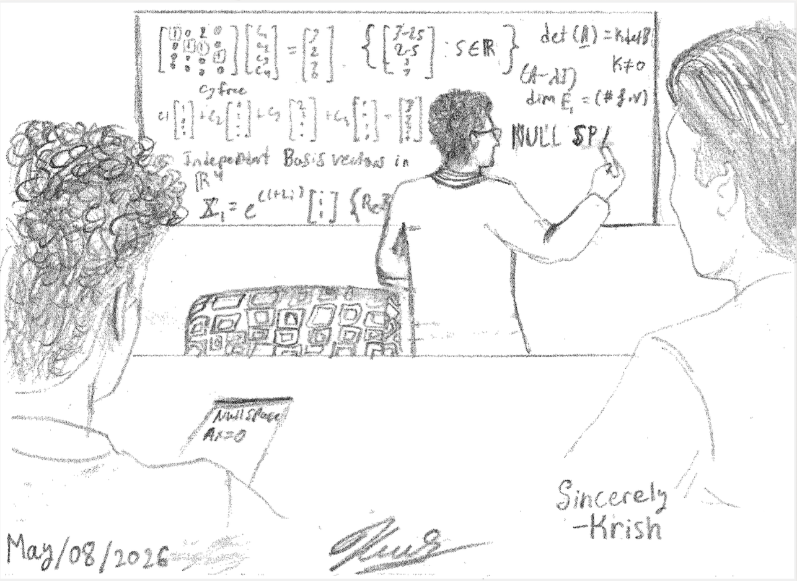

Research Interests
My current areas of work include analytic number theory, integer partitions, and q-series. For my PhD I was co-advised by Trevor Wooley and Ben McReynolds at Purdue University, and in April 2024 I defended my thesis The Asymptotics of Some Signed Partition Numbers. I am currently on the job market seeking postdoc/visiting assistant professor positions.
Prior to a change of research area in Fall 2021, I had lengthy study in hyperbolic (Laplacian-) spectral geometry. In addition, I have previously been interested in mathematical physics, topology, and cryptography.
Publications
T. Daniels, T. Huber, J. McLaughlin, D. Ye, The p-dissection of product of quintuple products, submitted; preprint: arXiv, 24 pp.
∗ The Mathematica notebook documenting some computations in the paper: pDissectionQuintuple.nb
T. Daniels, Periodic vanishings of the Legendre-17 signed partition numbers, submitted; preprint: arXiv, 49 pp.
T. Daniels, Biasymptotics of the Möbius- and Liouville-signed partition numbers, submitted; preprint: arXiv, 38 pp.
T. Daniels, Vanishing coefficients in two q-series related to Legendre-signed partitions, Res. Number Theory 10 (2024), Paper No. 81, 12 pp.. doi
∗ The Mathematica notebook documenting some computations in the paper: vanishingCompanion.nb
T. Daniels, The Asymptotics of Some Signed Partition Numbers, Doctoral Thesis, Aug. 2024. doi
T. Daniels, Legendre-signed partition numbers, J. Math. Anal. Appl. 542 (2025), no. 1., Paper No. 128717, 40 pp.. doi
T. Daniels, Bounds on the Möbius-signed partition numbers, Ramanujan J. 65 (2024), 81-123. doi
T. Daniels, D. Smith-Tone, Differential Properties of the HFE Cryptosystem,, Post-Quantum Cryptography – 6th Intl. Workshop, PQCrypto 2014, Univ. of Waterloo, Waterloo ON, Canada; Sept. 2014
Teaching
Spring 2026: MA 262 (Diff. Eq. and Lin. Alg.)
Fall 2025: MA 262 (Diff. Eq. and Lin. Alg.)


I have been teaching and grading math for about 10 years now, and in Summer 2015 I was an instructor in a Mandarin Chinese language-learning program for middle school students. For my work as a grader/TA in Fall 2020, I was awarded one of the Math Dept.'s Excellence in Teaching Award.
In particular, I have instructed courses in calculus, differential eqs, and linear algebra, recitations in calculus, real analysis, and complex analysis, and have graded for courses including real analysis (both real and complex), Galois theory, and measure theory.